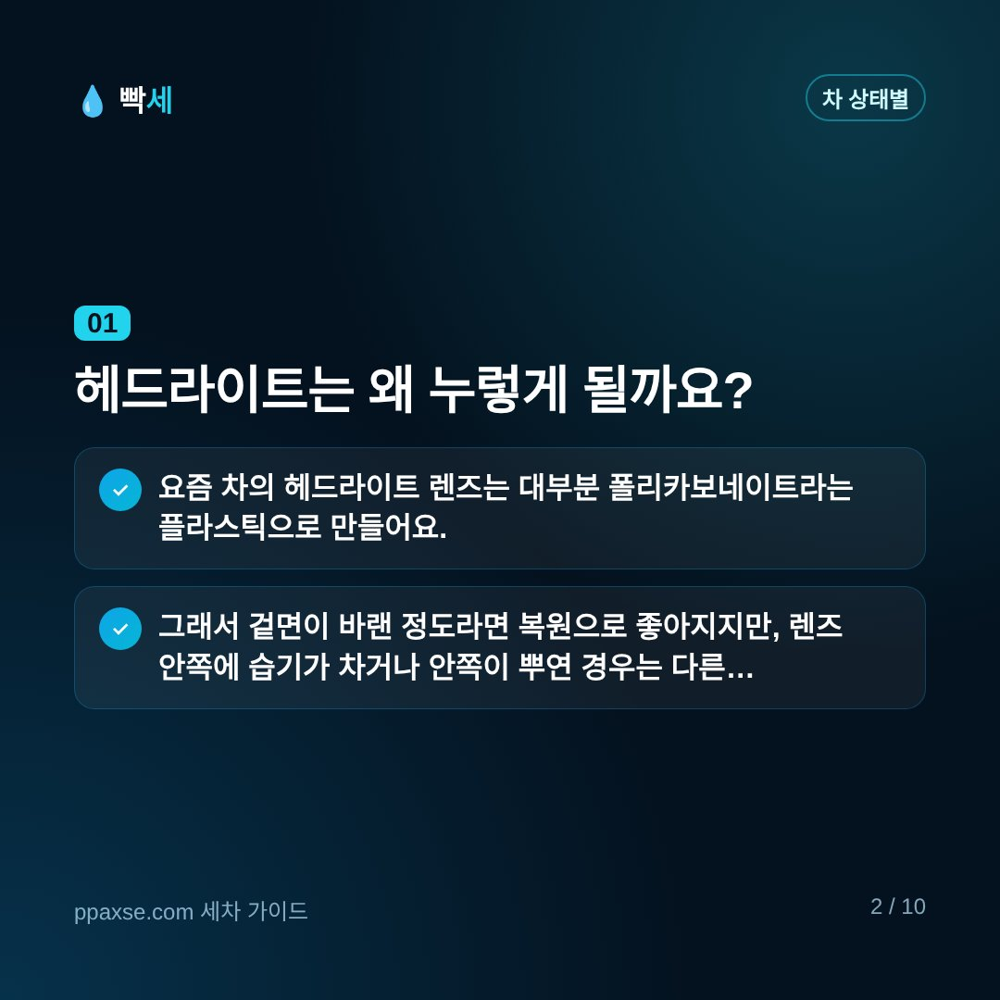
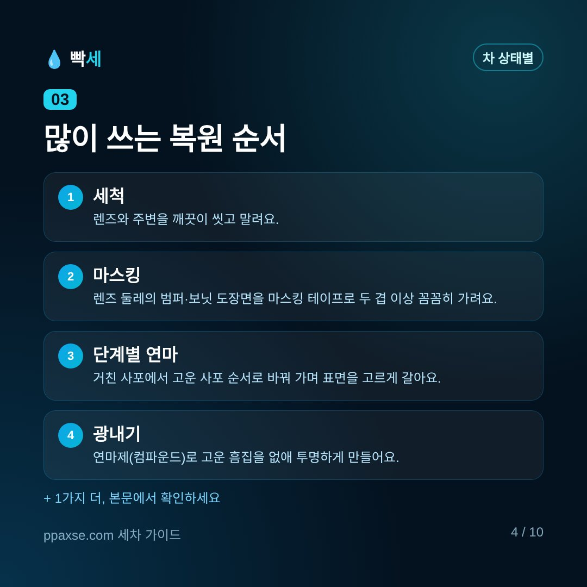
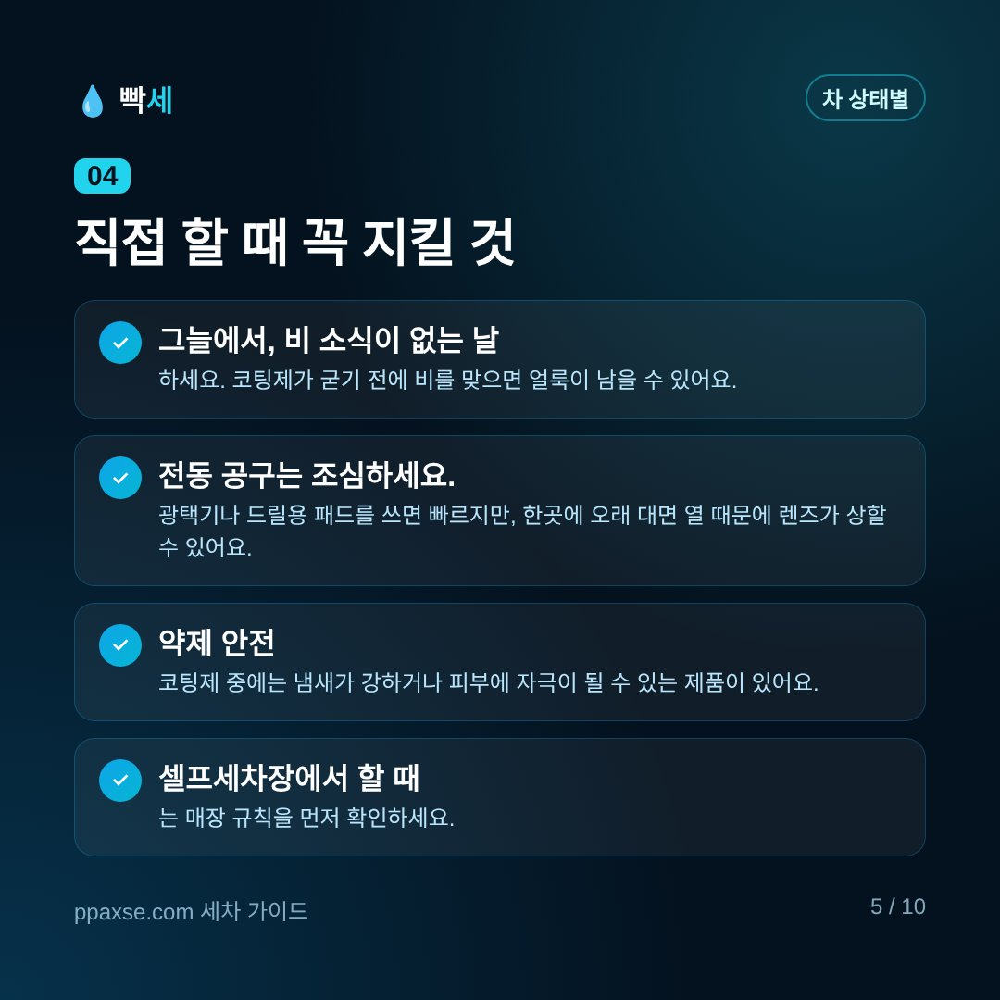
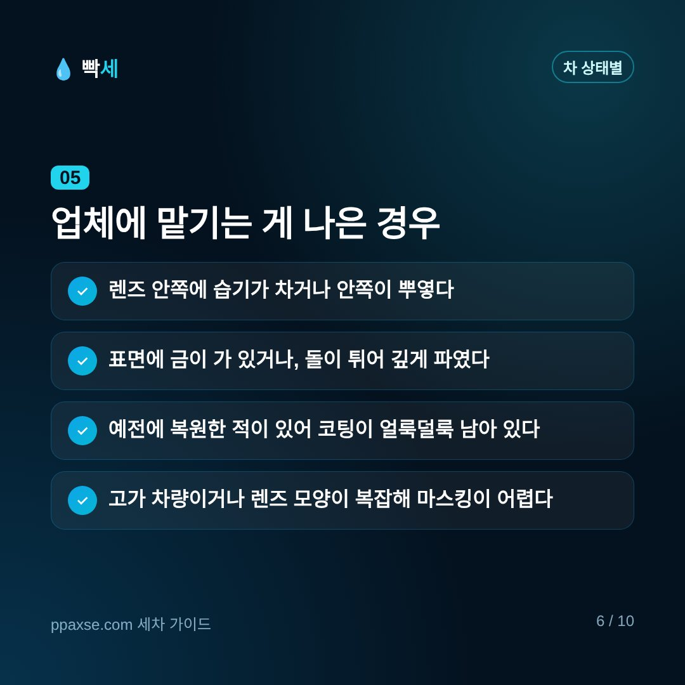
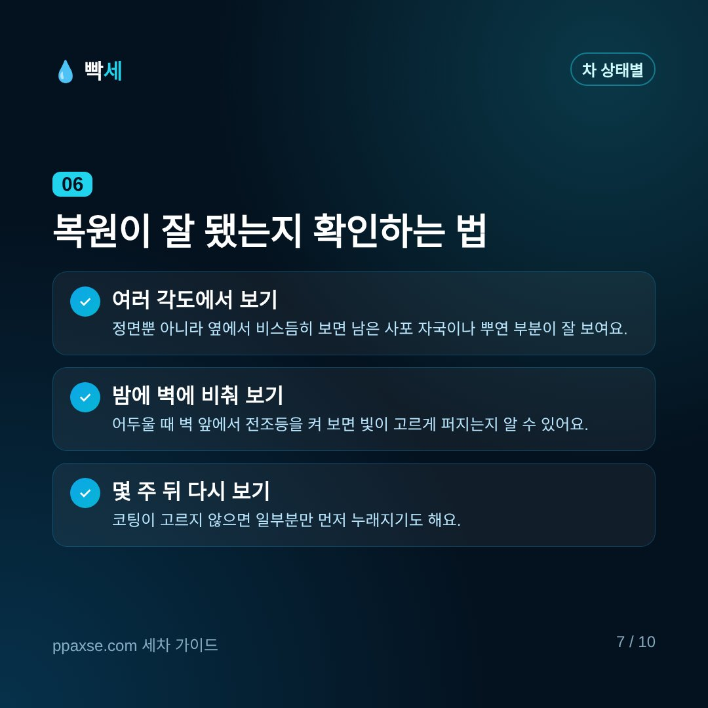

헤드라이트 복원, 직접 해도 될까요? — 누렇게 바랜 전조등
헤드라이트가 누렇고 뿌옇게 변했다면, 대부분은 렌즈 바깥쪽 표면이 햇빛(자외선)에 상한 것이에요. 이 경우 상한 겉면을 갈아 내고 다시 보호 코팅을 입히면 꽤 맑게 돌아와요. 직접 할 수도 있지만, 연마 작업이라 주변 도장을 보호하는 준비와 마지막 코팅을 빼먹지 않는 게 중요해요.
이 글은 헤드라이트 복원의 원리와 많이 쓰는 순서, 직접 할 때 주의할 점, 업체에 맡기는 게 나은 경우를 정리했어요. 제품마다 사용법이 다르니 실제로 할 때는 제품 설명서를 따르세요.
헤드라이트는 왜 누렇게 될까요?

요즘 차의 헤드라이트 렌즈는 대부분 폴리카보네이트라는 플라스틱으로 만들어요. 가볍고 잘 깨지지 않지만 자외선에 약해서, 출고할 때 겉면에 자외선을 막는 보호 코팅을 입혀요. 시간이 지나면 햇빛과 열, 세차·비바람으로 이 코팅이 조금씩 닳고 갈라지면서 표면이 누렇고 거칠게 변해요.
그래서 겉면이 바랜 정도라면 복원으로 좋아지지만, 렌즈 안쪽에 습기가 차거나 안쪽이 뿌연 경우는 다른 이야기예요. 안쪽은 겉에서 갈아 낼 수 없어서 점검이나 부품 교체가 필요할 수 있어요.
헤드라이트복원제만 바르면 될까요?
헤드라이트복원 제품은 크게 두 가지로 나뉘어요.
- 닦아서 광을 내는 복원제 — 가볍게 바랜 경우 연마 성분으로 표면을 다듬어 맑게 해 줘요. 간단하지만 효과가 오래가지 않는 경우가 많아요.
- 헤드라이트복원키트 — 사포(샌드페이퍼)로 상한 겉면을 단계별로 갈아 내고, 광을 낸 뒤, 보호 코팅제를 바르는 구성이 많아요. 손이 더 가지만 결과가 오래가는 편이에요.
어느 쪽이든 핵심은 마지막 보호 코팅이에요. 상한 코팅을 갈아 낸 렌즈는 맨 플라스틱이 드러난 상태라, 코팅 없이 두면 오히려 더 빨리 다시 누렇게 변한다는 이야기가 많아요.
많이 쓰는 복원 순서

- 세척 — 렌즈와 주변을 깨끗이 씻고 말려요. 모래가 남아 있으면 연마할 때 깊은 흠집이 생겨요.
- 마스킹 — 렌즈 둘레의 범퍼·보닛 도장면을 마스킹 테이프로 두 겹 이상 꼼꼼히 가려요. 사포나 연마제가 도장에 닿으면 도장이 상해요. 가장 많이 하는 실수가 이 부분이에요.
- 단계별 연마 — 거친 사포에서 고운 사포 순서로 바꿔 가며 표면을 고르게 갈아요. 물을 뿌리며 하는 습식 연마가 많고, 사포 번호와 단계는 키트 설명서를 따르세요. 한 단계를 마칠 때마다 표면이 고르게 뿌옇게 됐는지 확인해요.
- 광내기 — 연마제(컴파운드)로 고운 흠집을 없애 투명하게 만들어요.
- 탈지와 보호 코팅 — 표면의 기름기를 닦아 내고 보호 코팅제를 발라요. 비 맞으면 안 되는 시간, 굳는 시간은 제품마다 다르니 설명서를 지키세요.
사포 단계를 건너뛰면 굵은 흠집이 남아 다시 뿌옇게 보일 수 있어요. 시간이 걸려도 단계를 지키는 게 결과가 좋아요.
자주 하는 실수도 함께 알아 두세요. 한쪽만 하고 다른 쪽을 미루면 좌우 색이 달라 보여요. 또 연마 가루가 렌즈 틈과 범퍼 틈에 끼어 하얗게 남기 쉬우니, 끝난 뒤 물로 꼼꼼히 헹궈 주세요. 치약으로 문지르는 방법도 알려져 있지만, 잠깐 맑아질 뿐 코팅이 없어 금방 다시 바랜다는 이야기가 많아요.
직접 할 때 꼭 지킬 것

- 그늘에서, 비 소식이 없는 날 하세요. 코팅제가 굳기 전에 비를 맞으면 얼룩이 남을 수 있어요.
- 전동 공구는 조심하세요. 광택기나 드릴용 패드를 쓰면 빠르지만, 한곳에 오래 대면 열 때문에 렌즈가 상할 수 있어요. 처음이라면 손으로 하는 쪽이 안전해요.
- 약제 안전 — 코팅제 중에는 냄새가 강하거나 피부에 자극이 될 수 있는 제품이 있어요. 장갑을 끼고, 환기가 되는 곳에서, 설명서의 주의사항을 따르세요.
- 셀프세차장에서 할 때는 매장 규칙을 먼저 확인하세요. 오래 걸리는 작업은 베이를 오래 차지해 다른 이용자에게 불편을 줄 수 있어서, 작업 공간이 따로 있는 곳에서 하거나 집 주차장 등에서 하는 분들도 있어요.
업체에 맡기는 게 나은 경우

빡세는 가볍게 바랜 정도라면 키트로 직접 해 보는 것도 좋은 선택이라고 생각해요. 다만 아래 경우에는 디테일링샵이나 정비소에 물어보는 게 나을 수 있어요.
- 렌즈 안쪽에 습기가 차거나 안쪽이 뿌옇다
- 표면에 금이 가 있거나, 돌이 튀어 깊게 파였다
- 예전에 복원한 적이 있어 코팅이 얼룩덜룩 남아 있다
- 고가 차량이거나 렌즈 모양이 복잡해 마스킹이 어렵다
업체에 맡길 때는 비용만 보지 말고 어떤 코팅으로 마무리하는지, 다시 누래졌을 때 어떻게 해 주는지를 물어보면 비교하기 좋아요. 비용은 업체와 방식마다 달라서 미리 문의해 보세요. 반대로 손재주가 있는 분들은 업체 대신 매번 직접 하기도 해요. 어느 쪽이든 정답이라기보다 선택의 문제예요.
복원이 잘 됐는지 확인하는 법

- 여러 각도에서 보기 — 정면뿐 아니라 옆에서 비스듬히 보면 남은 사포 자국이나 뿌연 부분이 잘 보여요.
- 밤에 벽에 비춰 보기 — 어두울 때 벽 앞에서 전조등을 켜 보면 빛이 고르게 퍼지는지 알 수 있어요. 얼룩진 부분이 있으면 빛 모양에도 티가 나요.
- 몇 주 뒤 다시 보기 — 코팅이 고르지 않으면 일부분만 먼저 누래지기도 해요. 그럴 땐 그 부분만 다시 손보는 분들도 있어요.
복원 후 관리와 세차장 찾기
복원한 뒤에는 세차할 때 헤드라이트도 부드러운 미트로 닦고, 거친 수세미나 강한 약제는 피하는 게 좋아요. 광택 작업 전반이 궁금하다면 자동차 광택이란?을 참고하세요. 헤드라이트 복원을 하는 디테일링샵은 빡세 지도의 지역별 세차장 모음에서 찾아볼 수 있어요. 다녀온 곳이 있다면 어떤 작업을 해 주는지 한마디로 남겨 주세요.
셀프세차·노터치·손세차를 종류별로 골라 보고, 폼건·온수·하부세차 같은 시설 정보도 확인할 수 있어요.
🗺️ 세차장 지도 열기✏️ 자주 가는 세차장에 한마디 남기기🎁 한마디를 남기면 가입 없이도 매주 기프티콘 추첨에 응모돼요.